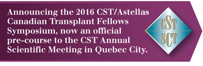

|

We will soon be asking you to nominate Fellows or Trainees from your program. Please look for your nomination invitation via email in the coming weeks.
New this year, the CST members will also have an opportunity to attend.
We look forward to welcoming a broad audience to the 2016 symposium to further enhance the exchange of educational, clinical and personal experiences.
Direct any immediate questions to Jennifer Martins at jmartins@stacom.com.
Supported by an educational grant from
 |
In partnership with the
 |
|